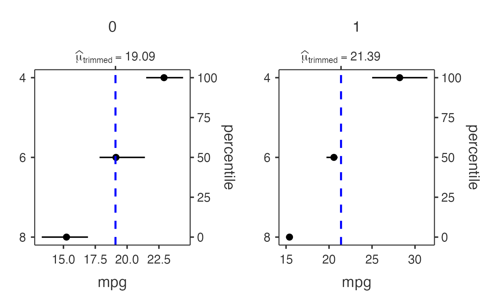
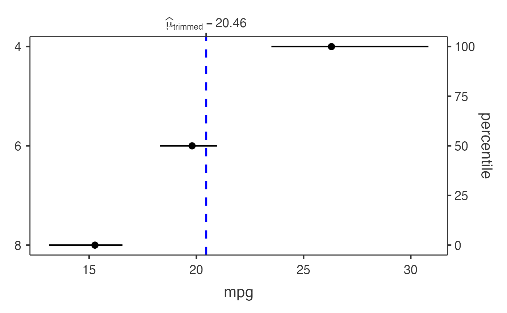

Wrapper Function for ggstatsplot::ggdotplotstats and ggstatsplot::grouped_ggdotplotstats to generate dot plots comparing continuous variables between groups with statistical annotations and significance testing.
Usage
jjdotplotstats(
data,
dep,
group,
grvar,
typestatistics = "parametric",
effsizetype = "biased",
centralityplotting = FALSE,
centralitytype = "parametric",
mytitle = "",
xtitle = "",
ytitle = "",
originaltheme = FALSE,
resultssubtitle = FALSE,
testvalue = 0,
bfmessage = FALSE,
conflevel = 0.95,
k = 2,
testvalueline = FALSE,
centralityparameter = "mean",
centralityk = 2,
plotwidth = 650,
plotheight = 450,
guidedMode = FALSE,
clinicalPreset = "basic"
)Arguments
- data
The data as a data frame.
- dep
A continuous numeric variable for which the distribution will be displayed across different groups using dot plots.
- group
A categorical variable that defines the groups for comparison. Each level will be displayed as a separate group in the dot plot.
- grvar
Optional grouping variable to create separate dot plots for each level of this variable (grouped analysis).
- typestatistics
Choose the appropriate statistical test: Parametric (t-test) assumes normal distribution and equal variances; Nonparametric (Mann-Whitney U) makes no distribution assumptions; Robust uses trimmed means to handle outliers; Bayesian provides evidence strength via Bayes factors.
- effsizetype
Effect size quantifies practical significance: Cohen's d shows standardized difference between groups (small=0.2, medium=0.5, large=0.8); Hedge's g corrects for small samples; Eta/Omega-squared show proportion of variance explained (small=0.01, medium=0.06, large=0.14).
- centralityplotting
Display lines showing the central tendency (mean, median, or trimmed mean) for each group. Helps visualize group differences at a glance.
- centralitytype
Type of central tendency to display: Mean is the average but sensitive to outliers; Median is the middle value and robust to outliers; Trimmed mean excludes extreme values; Bayesian provides probabilistic estimate.
- mytitle
Main title for the plot. Leave blank for automatic title generation based on your variables.
- xtitle
Label for the horizontal axis showing the continuous variable values. Leave blank to use variable name.
- ytitle
Label for the vertical axis showing the group categories. Leave blank to use variable name.
- originaltheme
Use the original ggstatsplot theme instead of jamovi's default theme. The original theme may be more suitable for publications.
- resultssubtitle
Display statistical test results (p-value, effect size, confidence interval) as a subtitle below the plot. Recommended for most analyses.
- testvalue
Reference value for hypothesis testing (usually 0 for group comparisons). Can be changed to test against a specific clinically meaningful value.
- bfmessage
Display Bayes Factor interpretation (evidence strength) when using Bayesian analysis. BF > 3 indicates moderate evidence, BF > 10 strong evidence.
- conflevel
Confidence level for intervals (0.95 = 95\ interval). This represents the probability that the true population parameter lies within the calculated interval. 95\ analyses.
- k
Number of decimal places for statistical results (p-values, effect sizes). More decimal places show greater precision but may not be clinically meaningful.
- testvalueline
Display a vertical reference line at the test value. Useful for showing clinically significant thresholds or normal reference ranges.
- centralityparameter
Which central tendency measure to show as a vertical line on the plot. Mean is sensitive to outliers; median is more robust for skewed data.
- centralityk
Decimal places for central tendency values displayed on the plot. Should match the precision meaningful for your measurement scale.
- plotwidth
Width of the plot in pixels. Larger values provide more detail but may not fit well in reports. Default: 650 pixels.
- plotheight
Height of the plot in pixels. Adjust based on number of groups to ensure readability. Default: 450 pixels.
- guidedMode
Enable step-by-step guidance for clinical researchers. Provides recommendations for test selection and interpretation.
- clinicalPreset
Pre-configured analysis settings optimized for different use cases. Basic: Simple comparison with key statistics; Publication: Journal-ready formatting; Clinical: Medical report optimization; Custom: Full control.
Value
A results object containing:
results$todo | a html | ||||
results$plot2 | an image | ||||
results$plot | an image | ||||
results$interpretation | a html | ||||
results$assumptions | a html | ||||
results$reportSentence | a html | ||||
results$guidedSteps | a html | ||||
results$recommendations | a html |
Examples
# Basic dot plot with iris dataset
jjdotplotstats(
data = iris,
dep = "Sepal.Length",
group = "Species",
typestatistics = "parametric"
)
#> Error in jjdotplotstats(data = iris, dep = "Sepal.Length", group = "Species", typestatistics = "parametric"): argument "grvar" is missing, with no default
# Advanced dot plot with custom settings
jjdotplotstats(
data = iris,
dep = "Petal.Width",
group = "Species",
typestatistics = "nonparametric",
centralityplotting = TRUE,
centralitytype = "nonparametric",
testvalueline = TRUE,
testvalue = 1.0,
mytitle = "Petal Width by Species",
xtitle = "Petal Width (cm)",
ytitle = "Species"
)
#> Error in jjdotplotstats(data = iris, dep = "Petal.Width", group = "Species", typestatistics = "nonparametric", centralityplotting = TRUE, centralitytype = "nonparametric", testvalueline = TRUE, testvalue = 1, mytitle = "Petal Width by Species", xtitle = "Petal Width (cm)", ytitle = "Species"): argument "grvar" is missing, with no default
# Grouped analysis with mtcars dataset
jjdotplotstats(
data = mtcars,
dep = "mpg",
group = "cyl",
grvar = "am",
typestatistics = "robust",
centralityplotting = TRUE,
centralitytype = "robust",
effsizetype = "unbiased",
conflevel = 0.99,
k = 3
)
#>
#> DOT CHART
#>
#> Processing data for dot plot analysis...
#>
#> ℹ️ 1 potential outlier(s) detected in mpg
#>
#> 📊 Analysis summary: 3 groups, 32 total observations
#>
#> <div style='background-color: #f8f9fa; padding: 15px; border-left: 4px
#> solid #007bff; margin: 10px 0;'><h4 style='color: #007bff; margin-top:
#> 0;'>📊 Clinical Interpretation
#>
#> Analysis: This dot plot shows the distribution of mpg across different
#> cyl categories using a robust test using trimmed means.
#>
#> Sample: Group '4' (n=11), Group '6' (n=7)
#>
#> Results: Group '4' shows a central value of 26.66 vs Group '6' with a
#> central value of 19.74.
#>
#> *💡 Tip: The statistical significance and effect size will be
#> displayed in the plot subtitle when the analysis completes.*
#>
#> <div style='background-color: #fff3cd; padding: 15px; border-left: 4px
#> solid #ffc107; margin: 10px 0;'><h4 style='color: #856404; margin-top:
#> 0;'>🔍 Data Assessment & Recommendations
#>
#> ⚠️ Small sample sizes (n < 10 in some groups). Consider descriptive
#> analysis only.
#>
#> ✓ Approximately normal distribution suitable for parametric tests.
#>
#> ✓ Robust test handles outliers and non-normal distributions well.
#>
#> <hr style='border-color: #ffeaa7;'>
#>
#> Sample sizes by group:
#> 4 : n = 11
#> 6 : n = 7
#> 8 : n = 14
#>
#> <div style='background-color: #e7f3ff; padding: 15px; border-left: 4px
#> solid #0066cc; margin: 10px 0;'><h4 style='color: #0066cc; margin-top:
#> 0;'>📝 Copy-Ready Report Sentence
#>
#> <div style='background-color: white; padding: 10px; border: 1px dashed
#> #0066cc; font-family: "Times New Roman", serif;'>
#>
#> A robust comparison test was performed to compare *mpg* between *cyl*
#> groups. The dot plot visualization shows the distribution and central
#> tendencies across groups, with statistical results displayed in the
#> plot subtitle including effect size and significance testing.
#>
#> *💡 Click to select the text above and copy to your report.
#> Statistical values will be automatically filled when the analysis
#> completes.*
#>
#> character(0)
#>
#> character(0)


# Bayesian analysis with ToothGrowth dataset
jjdotplotstats(
data = ToothGrowth,
dep = "len",
group = "supp",
typestatistics = "bayes",
bfmessage = TRUE,
centralityparameter = "mean",
mytitle = "Tooth Growth by Supplement Type"
)
#> Error in jjdotplotstats(data = ToothGrowth, dep = "len", group = "supp", typestatistics = "bayes", bfmessage = TRUE, centralityparameter = "mean", mytitle = "Tooth Growth by Supplement Type"): argument "grvar" is missing, with no default